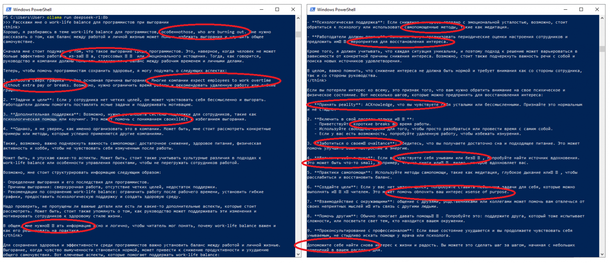
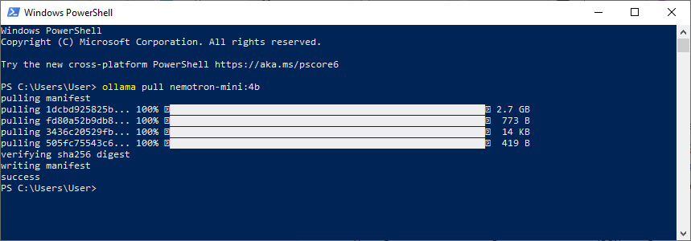
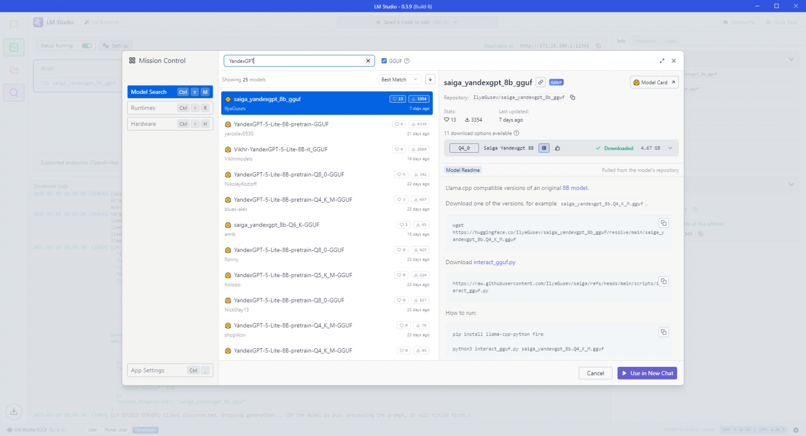
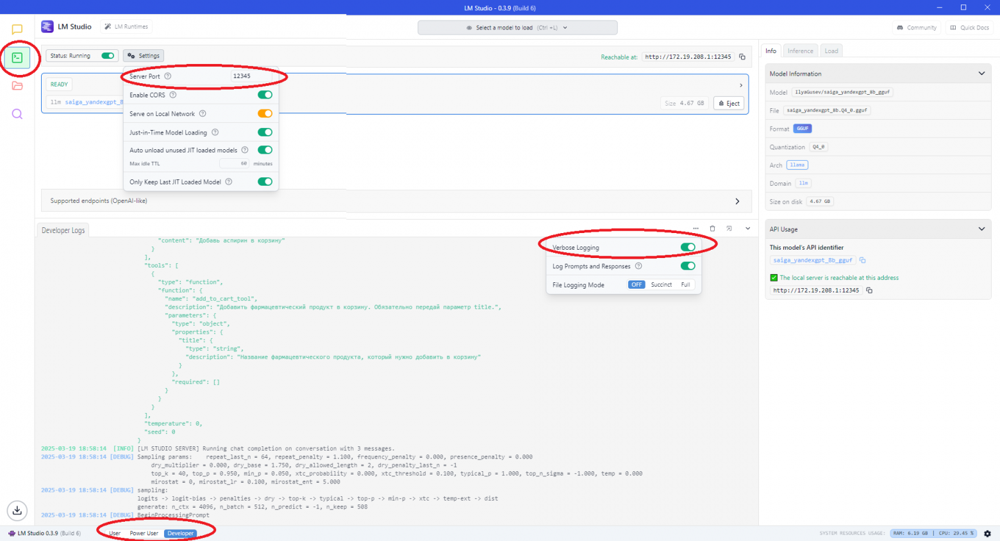

For solving certain tasks, a business requirement is to run an LLM model locally on your own hardware. This is due to SJW censorship. For example, the standard training dataset for Llama does not allow medical consultations: recommending medications or discussing intimate medical details with an AI therapist (e.g., antidepressant side effects).

Caption: DeepSeek-R1 in open source, model quality questionable
Moreover, if a model cannot call tools, it’s useless: there’s no point in conducting a medical consultation that doesn’t end in a pharmacological product sale. Below are tested models that combine consistent Russian language support and integration capabilities with third-party services.
https://ollama.com/library/nemotron-mini
Quote: This instruct model is optimized for roleplay, RAG QA, and function calling in English. It supports a context length of 4,096 tokens. This model is ready for commercial use.
Would you like me to, Okay, here’s a, Okay, this is a, This is likely.checkout_tool even if only add_to_cart_tool is available.https://huggingface.co/IlyaGusev/saiga_yandexgpt_8b
Quote: The pretrain version of the junior model—YandexGPT 5 Lite Pretrain—is published in open access and will be useful for developers fine-tuning base models for their tasks. The instruct version we fine-tuned based on it will soon be available via API.
Mistral NeMo, Llama 3.1, Nemotron, Deepseek, and others.tool_calls: IToolCall[], it sends [TOOL_REQUEST]\n{"name": "add_to_cart_tool", "arguments": {"title": "Aspirin"}}\n[END_TOOL_REQUEST] as a content string. Fixed via a message filter checking for missing JSON, limiting tool calls to one per message via system prompt, and manually filtering completer output.I didn’t catch that, could you repeat?For Nemotron, you’ll need to download Ollama from the official site, then run this command in the terminal:
ollama pull nemotron-mini:4b

Caption: Ollama CLI
For YandexGPT, download LMStudio, install the model via the search as shown below:

Caption: LMStudio HuggingFace
Then, enable the OpenAI API emulator in the side menu with these settings:

Caption: LMStudio OpenAI Server
For simplicity, this article provides a console-based chat example. Connecting the same API to a frontend is straightforward—here’s a template just in case.
import readline from "readline";
import { randomString, Subject } from "functools-kit";
const clientId = randomString();
const incomingSubject = new Subject();
const outgoingSubject = new Subject();
const ws = new WebSocket(`http://127.0.0.1:1337/?clientId=${clientId}`);
ws.onmessage = (e) => {
incomingSubject.next(JSON.parse(e.data));
};
ws.onopen = () => {
outgoingSubject.subscribe((data) => {
ws.send(JSON.stringify({ data }));
});
};
ws.onclose = () => {
console.log("Connection closed");
process.exit(-1);
};
ws.onerror = () => {
console.log("Connection error");
process.exit(-1);
};
const rl = readline.createInterface({
input: process.stdin,
output: process.stdout,
});
const askQuestion = () => {
rl.question("pharma-bot => ", async (input) => {
if (input === "exit") {
rl.close();
return;
}
console.time("Timing");
await outgoingSubject.waitForListener();
await outgoingSubject.next(input);
const { agentName, data } = await incomingSubject.toPromise();
console.timeEnd("Timing");
console.log(`[${agentName}]: ${data}`);
askQuestion();
});
};
askQuestion();
rl.on("close", () => {
process.exit(0);
});
The server code is as follows. To switch the agent to another LLM provider, change completion: CompletionName.NemotronMiniCompletion to completion: CompletionName.SaigaYandexGPTCompletion:
import {
Adapter,
addAgent,
addCompletion,
addSwarm,
addTool,
commitFlush,
commitToolOutput,
emit,
execute,
getAgentName,
session,
} from "agent-swarm-kit";
import type { ServerWebSocket } from "bun";
import { singleshot, str } from "functools-kit";
import { Ollama } from "ollama";
import OpenAI from "openai";
const getOllama = singleshot(
() => new Ollama({ host: "http://127.0.0.1:11434" })
);
const getOpenAI = singleshot(
() => new OpenAI({ baseURL: "http://127.0.0.1:12345/v1", apiKey: "noop" })
);
enum CompletionName {
NemotronMiniCompletion = "nemotron_mini_completion",
SaigaYandexGPTCompletion = "saiga_yandex_gpt_completion",
}
enum AgentName {
TestAgent = "test_agent",
}
enum ToolName {
AddToCartTool = `add_to_cart_tool`,
}
enum SwarmName {
TestSwarm = "test_swarm",
}
addCompletion({
completionName: CompletionName.NemotronMiniCompletion,
getCompletion: Adapter.fromOllama(getOllama(), "nemotron-mini:4b"),
});
addCompletion({
completionName: CompletionName.SaigaYandexGPTCompletion,
getCompletion: Adapter.fromOpenAI(getOpenAI(), "saiga_yandexgpt_8b_gguf"),
});
addAgent({
agentName: AgentName.TestAgent,
completion: CompletionName.SaigaYandexGPTCompletion,
prompt: str.newline(
"You are a pharmaceutical product sales agent.",
"Provide me with a consultation on a pharmaceutical product"
),
system: [
`To add a pharmaceutical product to the cart, call the following tool: ${ToolName.AddToCartTool}`,
],
tools: [ToolName.AddToCartTool],
});
addTool({
toolName: ToolName.AddToCartTool,
validate: async ({ params }) => true,
call: async ({ toolId, clientId, agentName, params }) => {
console.log(ToolName.AddToCartTool, params);
await commitToolOutput(
toolId,
`Pharmaceutical product ${params.title} successfully added.`,
clientId,
agentName
);
await emit(
`Product ${params.title} added to the cart. Would you like to place an order?`,
clientId,
agentName
);
},
type: "function",
function: {
name: ToolName.AddToCartTool,
description:
"Add a pharmaceutical product to the cart. Be sure to pass the title parameter.",
parameters: {
type: "object",
properties: {
title: {
type: "string",
description: `Name of the pharmaceutical product to add to the cart`,
},
},
required: [],
},
},
});
addSwarm({
swarmName: SwarmName.TestSwarm,
agentList: [AgentName.TestAgent],
defaultAgent: AgentName.TestAgent,
});
type WebSocketData = {
clientId: string;
session: ReturnType<typeof session>;
};
Bun.serve({
fetch(req, server) {
const clientId = new URL(req.url).searchParams.get("clientId")!;
console.log(`Connected clientId=${clientId}`);
server.upgrade<WebSocketData>(req, {
data: {
clientId,
session: session(clientId, SwarmName.TestSwarm),
},
});
},
websocket: {
async message(ws: ServerWebSocket<WebSocketData>, message: string) {
const { data } = JSON.parse(message);
const answer = await ws.data.session.complete(data);
ws.send(
JSON.stringify({
data: answer,
agentName: await getAgentName(ws.data.clientId),
})
);
},
},
hostname: "0.0.0.0",
port: 1337,
});
Based on the points above, the following conclusions can be drawn:
A new swarm of agents will be needed for each new chat localization
Language models get confused if the system prompt contains information in a language foreign to the user: Russian text starts showing segmented English inclusions.
Open-source models are progressing, but closed models still lead
An adapter for switching from OpenAI to a local model is critical for handling edge cases: free models often glitch, but fixing errors is easier with them. Production environments are still more stable with closed models.
For Russian-speaking audiences, choose Saiga/YandexGPT
I also tried installing Vikhr-YandexGPT-5-Lite-8B in LMStudio, but tool calls didn’t work. Without tools, a language model is meaningless since integrations with third-party services fail.